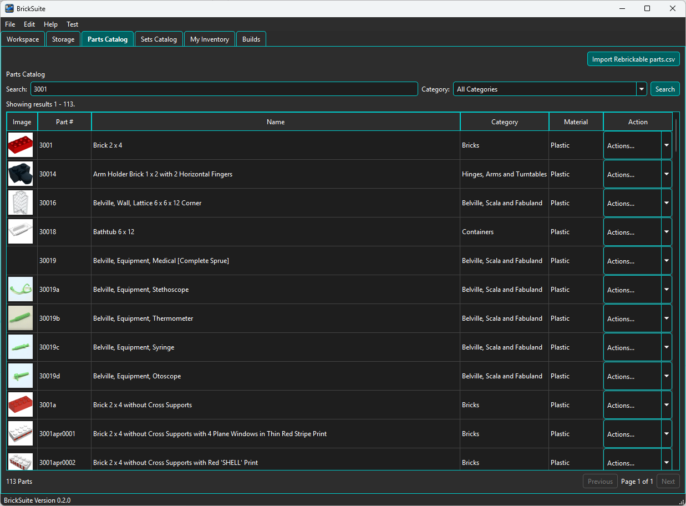
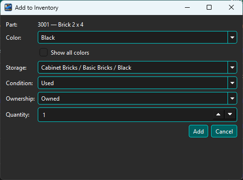

The Parts Catalog is BrickSuite's local reference library of part designs. Use it to answer questions such as What is this part?, What category does it belong to?, and How can I add it to my inventory?
The catalog is different from My Inventory. A catalog row describes a part design; My Inventory describes the parts you actually own, including their color, quantity, condition, ownership type, and physical storage location.
The main table shows the part image, part number, name, category, material, and an Actions menu. BrickSuite keeps the reference catalog locally so normal browsing and searching do not require a live API request.

The summary at the lower left shows the number of parts matching the current search and filter. When the result contains more than one page, use Previous and Next at the lower right to move through it.
In the example above the local catalog contains 64,301 parts. This number can change when newer Rebrickable reference data is imported.
Enter all or part of a part number or name in Search, optionally choose a
Category, and choose Search. The search is intentionally broad: entering
3001 finds part 3001 as well as other part numbers containing the same text.

Here, searching for 3001 produces 113 matching parts. The familiar 3001 — Brick 2 x 4 appears first, along with related part numbers such as 30014, 30016, 3001a, and printed variants whose identifiers also contain 3001.
Choose Details from a part's Actions menu to inspect its reference information.

The Part Details dialog can show the part number, name, category, material, known production years, Rebrickable details, and related reference information. For part 3001, the Related Parts view shows known molds, alternates, and printed variants.
Additional tabs can expose other reference identifiers associated with the part. The exact information available depends on the reference data known for that part.
A Parts Catalog entry represents the part design, not a single owned part/color combination. The same design can exist in multiple colors. BrickSuite therefore keeps the main catalog focused on part identity and lets color become relevant when viewing reference information or creating inventory.
This is an important distinction:
Parts Catalog What part designs exist? My Inventory Which parts do I own? What colors are they? How many do I have? Where are they stored?
Choose Add to Inventory from the Actions menu when you own a part and want BrickSuite to track it. The dialog begins with the selected catalog part and lets you describe the actual piece or pieces being added.

For the example shown, BrickSuite is ready to add one used, owned 3001 — Brick 2 x 4 in Black to Cabinet Bricks / Basic Bricks / Black.
The Show all colors option can be used when the color you need is not in the normal known color list for the part. This allows BrickSuite to accommodate unusual, non-brand, or otherwise valid inventory without weakening the normal color guidance.
Choose an appropriate active Storage location, Condition, Ownership type, and Quantity, then choose Add. This creates or updates owned inventory; it does not change the catalog definition itself.
See My Inventory for editing quantities, moving parts, viewing movement history, and other owned-inventory workflows.
The Import Rebrickable parts.csv action updates BrickSuite's local Parts Catalog from a Rebrickable parts CSV file. Existing catalog records can be updated and newly published part records can be added without removing older catalog entries merely because they are absent from a later import.
This catalog-reference import is separate from importing your personal Rebrickable parts list. See Rebrickable Import for owned inventory imports.
Getting Started | My Inventory | Rebrickable Import | Sets Catalog